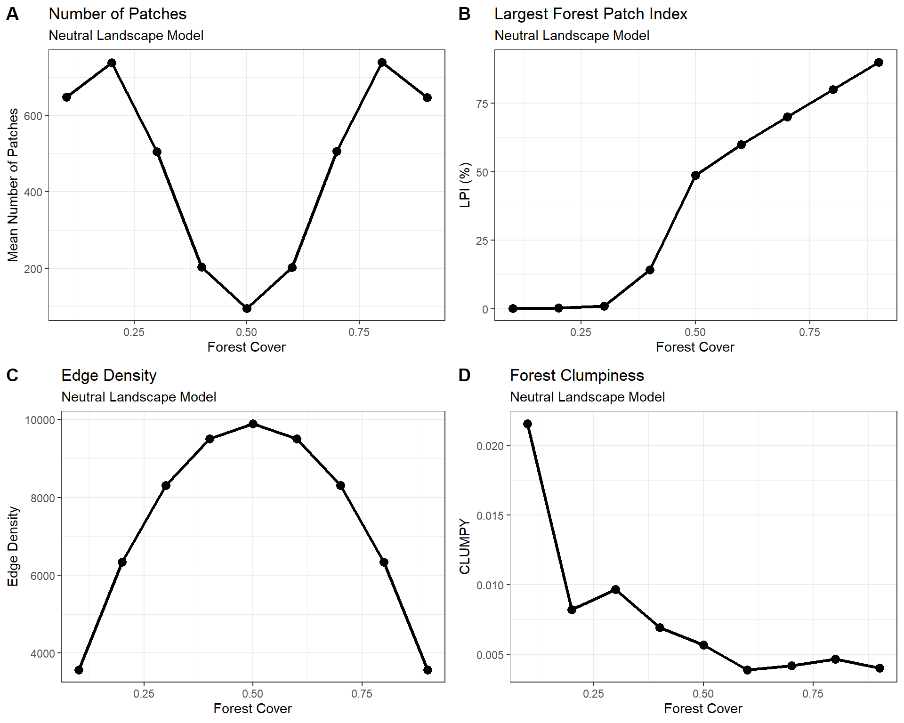
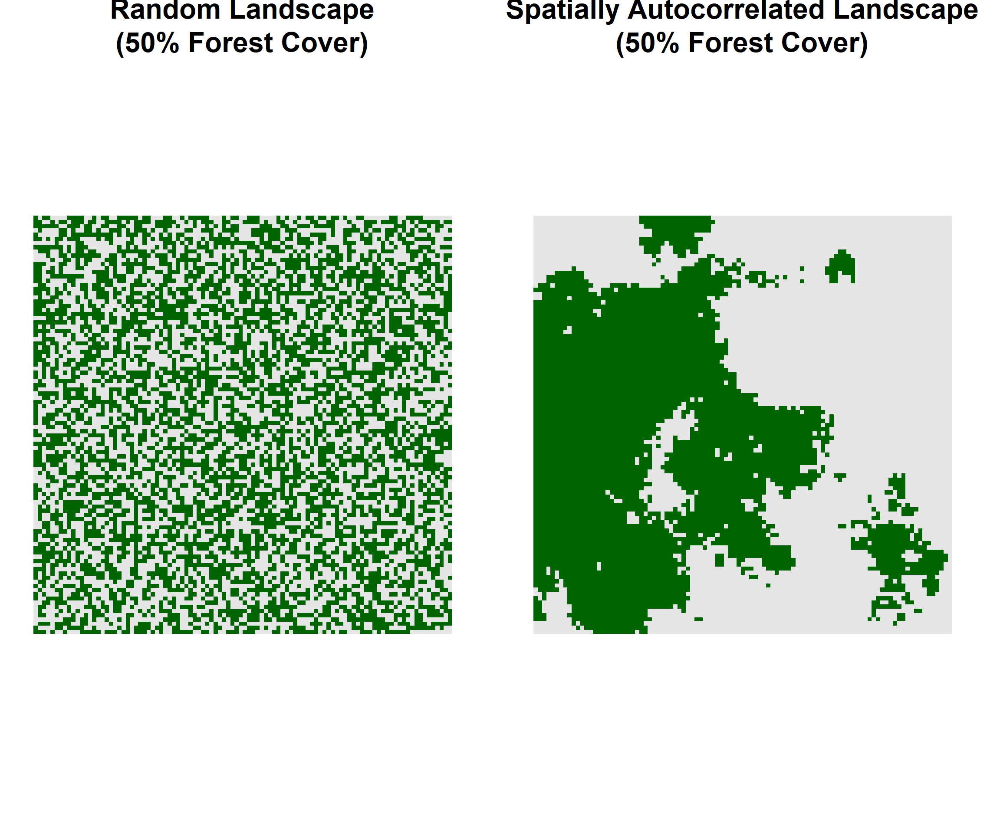

8 Neutral Landscape Models
8.1 Introduction
Neutral landscape models (NLMs) are simplified simulation models used to represent landscape patterns in the absence of specific ecological or environmental processes. They serve as a reference condition, analogous to a statistical null hypothesis of no effect, allowing modellers to test whether observed landscape patterns could arise through random processes alone. Because landscapes are shaped by numerous interacting factors—including climate, topography, soils, disturbances, and human activities—it is often difficult to determine whether a particular pattern is truly the result of a specific process. Neutral models help overcome this problem by generating artificial landscapes with known properties, allowing researchers to compare observed patterns against those expected under random conditions.They provide the baseline against which alternative explanations can be evaluated.
Although neutral landscape models were originally developed as theoretical tools in landscape ecology, they have several important forestry applications, particularly in understanding forest fragmentation, habitat connectivity, disturbance effects, and landscape management. Neutral landscape models are often used to evaluate whether observed forest patterns differ from what would be expected under random landscape configurations. One of the most influential applications of neutral theory was Hubbell’s Unified Neutral Theory of Biodiversity, which proposed that many patterns of species abundance and diversity can emerge from random processes among ecologically equivalent species. Although the theory remains debated, it demonstrated the power of neutral models as scientific tools.
8.2 Testing fragmentation and connectivity
Forest fragmentation is defined as the process of landscape-level structural changes to forests caused by human activities, resulting in isolated “islands” of residual forest amidst agricultural and urban development. This process often leads to reduced biodiversity and compromised ecological and evolutionary processes. For this exercise neutral landscapes were generated on a 100 × 100 raster grid (10,000 cells) using a random neutral landscape model (NLM) to explore fragmentation thresholds. Each cell was assigned a random value and subsequently classified as either forest or non-forest according to a predefined forest-cover threshold. Forest cover was varied systematically from 10% to 90% in 10% increments, creating a gradient of increasingly connected forest conditions. For each forest-cover level, 100 independent stochastic realizations (runs) were generated to account for random variation in landscape configuration and to provide a robust estimate of expected fragmentation patterns under neutral conditions.
The underlying logic of the model was to isolate the effect of habitat amount on landscape structure while controlling for all other potential drivers of pattern formation. Because forest cells were distributed randomly, any observed changes in landscape connectivity or fragmentation could be attributed solely to differences in the proportion of forest cover rather than to environmental gradients, disturbance processes, or management activities. This approach establishes a null-model reference against which real forest landscapes or more complex process-based simulations can be compared. By examining landscape patterns across a range of forest-cover levels, the model also allows identification of critical thresholds where small changes in habitat abundance produce large changes in connectivity.
Fragmentation is quantified for each simulated landscape using four commonly applied landscape metrics: Number of Patches (NP), Largest Patch Index (LPI), Edge Density (ED), and the CLUMPY index. NP measures the degree to which forest is subdivided into discrete patches, while LPI quantifies the proportion of the landscape occupied by the largest forest patch and serves as an indicator of connectivity. Edge Density measures the amount of forest–non-forest boundary relative to landscape area and reflects the prevalence of edge habitat. The CLUMPY index evaluates the spatial aggregation of forest cells, ranging from dispersed to highly clustered configurations. Mean values and standard deviations were calculated across the 100 replicates at each forest-cover level, allowing both the average fragmentation response and the variability associated with stochastic landscape generation to be assessed.
A key objective of the analysis is to identify the percolation threshold, defined as the critical level of forest cover at which isolated forest patches begin to merge into a landscape-spanning connected network. Percolation theory predicts that binary landscapes undergo a phase transition as habitat abundance and connectivity increases: below the threshold, habitat occurs primarily as small, disconnected patches or forest fragments, whereas above the threshold a dominant connected cluster emerges. This transition is often abrupt, with relatively small increases in forest cover producing disproportionately large increases in connectivity (and the converse is also true). In this experiment, changes in NP, LPI, ED, and CLUMPY are used to detect this transition. A rapid increase in LPI accompanied by a decline in patch numbers indicates that previously isolated patches have coalesced into a connected forest matrix. Identifying the percolation threshold is particularly important in forestry and conservation planning because it provides a quantitative benchmark for evaluating the level of forest retention necessary to maintain landscape connectivity, facilitate species movement, and support ecological processes across fragmented landscapes.
Code
###############################################################################
# Neutral Landscape Fragmentation Experiment
#
# Objective:
# Evaluate forest fragmentation as forest cover declines
# in a 100 x 100 neutral landscape.
#
# Metrics:
# NP = Number of Patches
# LPI = Largest Forest Patch Index (%)
# ED = Edge Density
# CLUMPY = Clumpiness Index
#
###############################################################################
library(NLMR)
library(raster)
library(landscapemetrics)
library(dplyr)
library(ggplot2)
#----------------------------------------------------------------------------
# PARAMETERS
#----------------------------------------------------------------------------
set.seed(123)
nrow_landscape <- 100
ncol_landscape <- 100
cover_levels <- seq(0.9, 0.1, by = -0.1)
n_replicates <- 100
#----------------------------------------------------------------------------
# METRIC FUNCTION
#----------------------------------------------------------------------------
simulate_landscape <- function(cover,
nrow = 100,
ncol = 100) {
# Generate neutral landscape
nlm <- nlm_random(
nrow = nrow,
ncol = ncol
)
# Convert to binary forest/non-forest
# Forest = 1
# Non-Forest = 0
forest <- nlm
forest[] <- as.integer(nlm[] < cover)
# Number of patches
np <- lsm_l_np(forest)$value
# Forest-specific Largest Patch Index
lpi_df <- lsm_c_lpi(forest)
lpi <- lpi_df$value[
lpi_df$class == 1
]
# Forest-specific Edge Density
ed_df <- lsm_c_ed(forest)
ed <- ed_df$value[
ed_df$class == 1
]
# Forest-specific Clumpiness
clumpy_df <- lsm_c_clumpy(forest)
clumpy <- clumpy_df$value[
clumpy_df$class == 1
]
data.frame(
cover = cover,
NP = np,
LPI = lpi,
ED = ed,
CLUMPY = clumpy
)
}
#----------------------------------------------------------------------------
# RUN SIMULATIONS
#----------------------------------------------------------------------------
results <- list()
counter <- 1
for (cover in cover_levels) {
cat("Running cover level:", cover, "\n")
for (rep in 1:n_replicates) {
temp <- simulate_landscape(
cover = cover,
nrow = nrow_landscape,
ncol = ncol_landscape
)
temp$replicate <- rep
results[[counter]] <- temp
counter <- counter + 1
}
}
## Running cover level: 0.9
## Running cover level: 0.8
## Running cover level: 0.7
## Running cover level: 0.6
## Running cover level: 0.5
## Running cover level: 0.4
## Running cover level: 0.3
## Running cover level: 0.2
## Running cover level: 0.1
results <- bind_rows(results)
#----------------------------------------------------------------------------
# SUMMARY STATISTICS
#----------------------------------------------------------------------------
summary_results <- results %>%
group_by(cover) %>%
summarise(
mean_NP = mean(NP),
sd_NP = sd(NP),
mean_LPI = mean(LPI),
sd_LPI = sd(LPI),
mean_ED = mean(ED),
sd_ED = sd(ED),
mean_CLUMPY = mean(CLUMPY),
sd_CLUMPY = sd(CLUMPY),
.groups = "drop"
)
#----------------------------------------------------------------------------
# PLOT 1: NUMBER OF PATCHES
#----------------------------------------------------------------------------
p1 <- ggplot(
summary_results,
aes(x = cover,
y = mean_NP)
) +
geom_line(linewidth = 1.1) +
geom_point(size = 3) +
theme_bw() +
theme(
plot.title = element_text(
size = 18,
face = "bold"
),
plot.subtitle = element_text(
size = 16
),
axis.title = element_text(
size = 14
),
axis.text = element_text(
size = 12
),
legend.title = element_text(
size = 14
),
legend.text = element_text(
size = 14
)
)+
labs(
title = "Number of Patches",
subtitle = "Neutral Landscape Model",
x = "Forest Cover",
y = "Mean Number of Patches"
)
#----------------------------------------------------------------------------
# PLOT 2: LARGEST PATCH INDEX
#----------------------------------------------------------------------------
p2 <- ggplot(
summary_results,
aes(x = cover,
y = mean_LPI)
) +
geom_line(linewidth = 1.1) +
geom_point(size = 3) +
theme_bw() +
theme(
plot.title = element_text(
size = 18,
face = "bold"
),
plot.subtitle = element_text(
size = 16
),
axis.title = element_text(
size = 14
),
axis.text = element_text(
size = 12
),
legend.title = element_text(
size = 14
),
legend.text = element_text(
size = 14
)
)+
labs(
title = "Largest Forest Patch Index",
subtitle = "Neutral Landscape Model",
x = "Forest Cover",
y = "LPI (%)"
)
#----------------------------------------------------------------------------
# PLOT 3: EDGE DENSITY
#----------------------------------------------------------------------------
p3 <- ggplot(
summary_results,
aes(x = cover,
y = mean_ED)
) +
geom_line(linewidth = 1.1) +
geom_point(size = 3) +
theme_bw() +
theme(
plot.title = element_text(
size = 18,
face = "bold"
),
plot.subtitle = element_text(
size = 16
),
axis.title = element_text(
size = 14
),
axis.text = element_text(
size = 12
),
legend.title = element_text(
size = 14
),
legend.text = element_text(
size = 14
)
)+
labs(
title = "Edge Density",
subtitle = "Neutral Landscape Model",
x = "Forest Cover",
y = "Edge Density"
)
#----------------------------------------------------------------------------
# PLOT 4: CLUMPINESS
#----------------------------------------------------------------------------
p4 <- ggplot(
summary_results,
aes(x = cover,
y = mean_CLUMPY)
) +
geom_line(linewidth = 1.1) +
geom_point(size = 3) +
theme_bw() +
theme(
plot.title = element_text(
size = 18,
face = "bold"
),
plot.subtitle = element_text(
size = 16
),
axis.title = element_text(
size = 14
),
axis.text = element_text(
size = 12
),
legend.title = element_text(
size = 14
),
legend.text = element_text(
size = 14
)
)+
labs(
title = "Forest Clumpiness",
subtitle = "Neutral Landscape Model",
x = "Forest Cover",
y = "CLUMPY"
)8.3 NLM Results
| Neutral Landscape Model Results | ||||
| 100 × 100 Grid; 100 Replicates per Forest-Cover Level | ||||
| Forest Cover | Number of Patches | Largest Patch Index (%) | Edge Density | Forest Clumpiness Index |
|---|---|---|---|---|
| 0.10 | 648.29 | 0.09 | 3,566.64 | 0.0216 |
| 0.20 | 737.24 | 0.29 | 6,337.27 | 0.0082 |
| 0.30 | 505.00 | 1.07 | 8,310.46 | 0.0097 |
| 0.40 | 203.48 | 14.30 | 9,509.09 | 0.0069 |
| 0.50 | 95.09 | 48.76 | 9,901.63 | 0.0057 |
| 0.60 | 202.98 | 59.80 | 9,509.76 | 0.0039 |
| 0.70 | 505.90 | 70.00 | 8,314.15 | 0.0042 |
| 0.80 | 739.47 | 79.99 | 6,338.88 | 0.0047 |
| 0.90 | 646.20 | 90.00 | 3,568.11 | 0.0040 |
The neutral landscape simulations reveal a classic fragmentation–connectivity transition predicted by percolation theory. At low levels of forest cover (10–30%), forest habitat exists primarily as numerous small, isolated patches distributed throughout a dominant non-forest matrix. This is reflected by the high number of patches (NP), which increases from approximately 646 at 10% forest cover to a maximum of 736 at 20% cover. Despite the large number of patches, the Largest Patch Index (LPI) remains extremely low, increasing only from 0.09% to 1.04%, indicating that no single forest patch dominates the landscape. Under these conditions, connectivity is very limited, and movement among forest patches would likely depend on dispersal across non-forest areas.

Figure 8.1: Fragmentation metrics across a forest-cover gradient generated using a 100 × 100 neutral landscape model.
The most important result is the abrupt shift in landscape structure between 40% and 50% forest cover. As forest cover increases from 30% to 40%, LPI rises sharply from approximately 1% to over 15%, while NP declines from 502 to 201 patches. A second increase occurs between 40% and 50% cover, where LPI jumps to nearly 49% of the entire landscape and NP falls to only 95 patches. This rapid reorganization reflects the emergence of a dominant connected forest network and identifies a percolation threshold occurring between approximately 40% and 50% forest cover. Small increases in habitat availability around this threshold produce disproportionately large gains in connectivity as isolated patches merge into a landscape-spanning forest cluster.
The behavior of edge density (ED) provides additional evidence of this transition. ED increases steadily from approximately 3,571 at 10% forest cover to a maximum of 9,902 at 50% cover, after which it declines symmetrically as forest cover continues to increase. This pattern is expected because edge habitat is greatest when forest and non-forest occur in roughly equal proportions. At low forest cover there is little forest available to create edges, whereas at high forest cover there is little non-forest available to generate boundaries. Consequently, intermediate forest-cover levels produce the highest degree of forest–non-forest interface and represent the most fragmented landscape condition with respect to edge effects.
As forest cover increases beyond the percolation threshold, connectivity rapidly improves and the forest matrix becomes increasingly dominant. LPI increases almost linearly from 49% at 50% forest cover to 90% at 90% forest cover, indicating that a single large forest patch occupies most of the landscape. At the same time, the number of forest patches increases again because small non-forest openings increasingly fragment the continuous forest matrix, producing numerous isolated non-forest patches while the forest itself remains highly connected. The CLUMPY index remains close to zero across all cover levels, indicating that the random neutral landscape model generated little spatial aggregation beyond that expected by chance. Overall, the results demonstrate that habitat amount alone can produce pronounced nonlinear changes in landscape structure, with a critical connectivity threshold occurring near 40–50% forest cover. This threshold provides a useful benchmark for forestry and conservation planning because it represents the point at which forest landscapes shift from being predominantly connected to predominantly fragmented.
The CLUMPY results provide an important confirmation that the observed fragmentation patterns are emerging from a random neutral landscape rather than from any underlying spatial process. The CLUMPY index measures the degree to which cells of the same class are aggregated relative to a random distribution. Values near +1 indicate strong clustering, values near 0 indicate a random spatial arrangement, and negative values indicate a more dispersed pattern than expected by chance. Across all forest-cover levels, CLUMPY remained very close to zero, ranging from approximately 0.004 to 0.021. This indicates that forest cells remained essentially randomly distributed throughout the simulations, with little spatial aggregation beyond that expected from chance alone.
The highest CLUMPY value occurred at 10% forest cover (0.021), after which values declined rapidly and stabilized near zero as forest cover increased. While this slight decrease suggests minor changes in local aggregation patterns, the magnitude of the changes is very small and unlikely to be meaningful. Rather than indicating true clustering, these fluctuations likely reflect stochastic variation associated with the random placement of forest cells within individual simulations. The consistently low CLUMPY values confirm that the neutral model successfully maintained random spatial structure throughout the experiment.
The CLUMPY results are particularly useful when interpreted alongside the Largest Patch Index (LPI). Between 40% and 50% forest cover, LPI increased dramatically from approximately 15% to 49%, indicating the emergence of a dominant connected forest patch. However, CLUMPY did not exhibit a corresponding increase. This demonstrates that the formation of large connected patches was not driven by increasing spatial aggregation of forest cells. Instead, connectivity emerged solely from increasing forest abundance. In other words, the percolation threshold observed in the simulations resulted from the greater probability of random neighboring cells becoming connected as forest cover increased, rather than from any intentional clustering process.
From a forestry and landscape ecology perspective, this distinction is important. The neutral model shows that a connected forest network can emerge even when forest is distributed randomly across the landscape. Consequently, the dramatic increase in connectivity observed around 40–50% forest cover represents a fundamental geometric property of the landscape rather than the influence of ecological processes or management practices. Real forest landscapes often exhibit much higher CLUMPY values because topography, disturbance regimes, succession, and management activities create clustered patterns of habitat. Therefore, deviations of observed landscapes from the near-zero CLUMPY values generated here would provide evidence that ecological or anthropogenic processes are shaping forest spatial structure beyond what would be expected under a neutral, random distribution. The CLUMPY results thus reinforce the interpretation that the percolation threshold identified in the experiment arises from habitat amount alone and serves as a useful null-model benchmark for evaluating connectivity in real forest landscapes.
8.4 Introducing Spatial Autocorrolation
Spatial autocorrelation describes the tendency for neighbouring locations to exhibit similar habitat conditions rather than being distributed independently across space. In landscapes with strong positive spatial autocorrelation, forest cells are more likely to occur adjacent to other forest cells, forming contiguous patches and larger areas of connected habitat. This contrasts with the random neutral model used previously, where the state of each cell is assigned independently, resulting in a highly dispersed and fragmented pattern. Because natural forest landscapes are influenced by environmental gradients, disturbance processes, and biological interactions that promote clustering, incorporating spatial autocorrelation provides a more realistic representation of habitat structure.
The following figure is a comparison of random and spatially autocorrelated neutral landscapes at 50% forest cover. Both landscapes contain the same amount of habitat, but the autocorrelated landscape exhibits larger, more contiguous forest patches, whereas the random landscape is highly dispersed and fragmented.

In this experiment, spatial autocorrelation was introduced using the midpoint displacement algorithm (nlm_mpd), which generates continuous spatially autocorrelated surfaces characterized by clusters of similar values. Forest cover was varied from 10% to 90% by applying quantile-based thresholds to these surfaces, producing binary forest and non-forest landscapes with controlled habitat abundance. The same thresholding procedure was applied to both random and spatially autocorrelated landscapes, ensuring that differences in fragmentation metrics reflected habitat configuration rather than habitat amount. Compared with random landscapes, autocorrelated landscapes exhibited substantially lower edge densities (ED) and much higher clumpiness values (CLUMPY), indicating the presence of larger, more contiguous habitat patches. These results demonstrate that spatial structure can strongly influence fragmentation dynamics, even when the total amount of habitat remains constant.
Code
library(NLMR)
library(raster)
library(landscapemetrics)
library(dplyr)
library(gt)
set.seed(123)
#---------------------------------------------------------------------------
# Experimental Design
#---------------------------------------------------------------------------
cover_levels <- seq(0.9, 0.1, by = -0.1)
n_replicates <- 100
#---------------------------------------------------------------------------
# Simulation Function
#---------------------------------------------------------------------------
simulate_landscape <- function(
cover,
model = "random",
nrow = 100,
ncol = 100){
#-----------------------------------------------------------------------
# Generate Landscape
#-----------------------------------------------------------------------
if(model == "random"){
nlm <- nlm_random(
nrow = nrow,
ncol = ncol
)
} else if(model == "clustered"){
nlm <- nlm_mpd(
nrow = nrow,
ncol = ncol,
roughness = 0.7
)
}
#-----------------------------------------------------------------------
# Convert to Forest / Non-Forest
#-----------------------------------------------------------------------
threshold <- quantile(
values(nlm),
probs = cover,
na.rm = TRUE
)
forest <- nlm
forest[] <- as.integer(values(nlm) <= threshold)
#-----------------------------------------------------------------------
# Fragmentation Metrics
#-----------------------------------------------------------------------
np <- lsm_l_np(forest)$value
lpi <- lsm_c_lpi(forest) |>
filter(class == 1) |>
pull(value)
ed <- lsm_c_ed(forest) |>
filter(class == 1) |>
pull(value)
clumpy <- lsm_c_clumpy(forest) |>
filter(class == 1) |>
pull(value)
data.frame(
Model = model,
Cover = cover,
NP = np,
LPI = lpi,
ED = ed,
CLUMPY = clumpy
)
}
#---------------------------------------------------------------------------
# Run Simulations
#---------------------------------------------------------------------------
results <- list()
counter <- 1
total_runs <- 2 * length(cover_levels) * n_replicates
for(model in c("random", "clustered")){
cat("Running:", model, "\n")
for(cover in cover_levels){
for(rep in 1:n_replicates){
results[[counter]] <- simulate_landscape(
cover = cover,
model = model
)
if(counter %% 100 == 0){
cat(
sprintf(
"Completed %d of %d (%.1f%%)\n",
counter,
total_runs,
100 * counter / total_runs
)
)
flush.console()
}
counter <- counter + 1
}
}
}
## Running: random
## Completed 100 of 1800 (5.6%)
## Completed 200 of 1800 (11.1%)
## Completed 300 of 1800 (16.7%)
## Completed 400 of 1800 (22.2%)
## Completed 500 of 1800 (27.8%)
## Completed 600 of 1800 (33.3%)
## Completed 700 of 1800 (38.9%)
## Completed 800 of 1800 (44.4%)
## Completed 900 of 1800 (50.0%)
## Running: clustered
## Completed 1000 of 1800 (55.6%)
## Completed 1100 of 1800 (61.1%)
## Completed 1200 of 1800 (66.7%)
## Completed 1300 of 1800 (72.2%)
## Completed 1400 of 1800 (77.8%)
## Completed 1500 of 1800 (83.3%)
## Completed 1600 of 1800 (88.9%)
## Completed 1700 of 1800 (94.4%)
## Completed 1800 of 1800 (100.0%)
results <- bind_rows(results)
#---------------------------------------------------------------------------
# Summarize Results
#---------------------------------------------------------------------------
summary_results <- results |>
group_by(Model, Cover) |>
summarise(
Mean_NP = mean(NP, na.rm = TRUE),
Mean_LPI = mean(LPI, na.rm = TRUE),
Mean_ED = mean(ED, na.rm = TRUE),
Mean_CLUMPY = mean(CLUMPY, na.rm = TRUE),
.groups = "drop"
)
#---------------------------------------------------------------------------
# Display Summary Table
#---------------------------------------------------------------------------
summary_results |>
arrange(Model, desc(Cover)) |>
gt() |>
tab_header(
title = md("**Random vs. Clustered Neutral Landscapes**"),
subtitle = "100 × 100 grids; 100 replicates per cover level"
) |>
fmt_number(
columns = c(
Mean_NP,
Mean_LPI,
Mean_ED
),
decimals = 2
) |>
fmt_number(
columns = Mean_CLUMPY,
decimals = 4
)| Random vs. Clustered Neutral Landscapes | |||||
| 100 × 100 grids; 100 replicates per cover level | |||||
| Model | Cover | Mean_NP | Mean_LPI | Mean_ED | Mean_CLUMPY |
|---|---|---|---|---|---|
| clustered | 0.9 | 56.57 | 89.66 | 969.64 | 0.7310 |
| clustered | 0.8 | 71.13 | 78.89 | 1,391.46 | 0.7830 |
| clustered | 0.7 | 90.46 | 66.82 | 1,755.88 | 0.7939 |
| clustered | 0.6 | 95.58 | 54.05 | 1,900.35 | 0.8040 |
| clustered | 0.5 | 99.23 | 41.58 | 1,984.09 | 0.8058 |
| clustered | 0.4 | 98.08 | 30.98 | 1,936.26 | 0.8046 |
| clustered | 0.3 | 88.01 | 22.04 | 1,648.66 | 0.8123 |
| clustered | 0.2 | 77.70 | 12.28 | 1,453.07 | 0.7836 |
| clustered | 0.1 | 56.13 | 5.86 | 953.31 | 0.7529 |
| random | 0.9 | 646.83 | 90.00 | 3,567.83 | 0.0037 |
| random | 0.8 | 739.96 | 80.00 | 6,335.78 | 0.0048 |
| random | 0.7 | 504.59 | 69.97 | 8,319.59 | 0.0042 |
| random | 0.6 | 203.14 | 59.82 | 9,508.74 | 0.0039 |
| random | 0.5 | 94.54 | 48.76 | 9,902.48 | 0.0039 |
| random | 0.4 | 204.44 | 14.47 | 9,505.12 | 0.0071 |
| random | 0.3 | 504.07 | 1.05 | 8,315.20 | 0.0098 |
| random | 0.2 | 737.56 | 0.29 | 6,332.35 | 0.0080 |
| random | 0.1 | 649.00 | 0.09 | 3,569.42 | 0.0224 |
8.5 Cluster Results
The comparison between random and spatially autocorrelated landscapes demonstrates that habitat configuration has a strong influence on fragmentation patterns independent of habitat abundance. Across all forest cover levels, the clustered landscapes generated using the midpoint displacement algorithm exhibited substantially lower edge densities and much higher clumpiness values than their random counterparts. For example, at 50% forest cover, edge density was approximately five times lower in clustered landscapes (1,984 vs. 9,902), while CLUMPY increased from nearly zero (0.0039) in random landscapes to over 0.80. These differences indicate that spatial autocorrelation concentrates forest cells into compact, contiguous habitat blocks rather than dispersing them uniformly across the landscape.
The effect of spatial autocorrelation is particularly evident in the behaviour of edge density. In random landscapes, ED peaked near intermediate forest cover, reflecting the extensive mixing of forest and non-forest cells. Because neighbouring cells were assigned independently, large numbers of habitat boundaries were created, resulting in highly fragmented landscapes with extensive edge effects. In contrast, clustered landscapes maintained relatively low edge densities across the entire cover gradient. Aggregation of forest cells reduced the amount of boundary per unit area, producing larger interior regions and a more connected landscape structure.
Clumpiness (CLUMPY) provides even stronger evidence of the influence of spatial structure. Random landscapes consistently produced CLUMPY values near zero, indicating little tendency for forest cells to occur adjacent to one another beyond what would be expected by chance. In contrast, clustered landscapes maintained CLUMPY values between approximately 0.73 and 0.81 across all cover levels, demonstrating a strong degree of aggregation. These high values indicate that forest cells were preferentially grouped together, promoting connectivity and reducing isolation among habitat patches. Such patterns are ecologically important because they increase movement opportunities for organisms and help maintain larger areas of core habitat.
The largest patch index (LPI) and number of patches (NP) further illustrate how fragmentation dynamics differ between random and autocorrelated landscapes. In both landscape types, LPI increased as forest cover increased, reflecting the growth of dominant habitat patches. However, clustered landscapes maintained relatively large and coherent habitat blocks even at lower levels of forest cover. While NP was not always dramatically lower in clustered landscapes, the combination of lower ED and higher CLUMPY indicates that patch arrangement, rather than patch count alone, is driving the observed differences in fragmentation. Overall, these results demonstrate that habitat amount alone is insufficient to describe landscape fragmentation. Spatial autocorrelation fundamentally alters the arrangement, connectivity, and persistence of habitat, highlighting the importance of considering both habitat quantity and spatial configuration when evaluating landscape structure.
8.6 Summary
This experiment used neutral landscape models (NLMs) to investigate how forest cover and spatial pattern influence landscape fragmentation. A series of 100 × 100 cell landscapes were generated across a gradient of forest cover ranging from 10% to 90%. Initially, landscapes were created using a random neutral model in which each cell was assigned independently, producing patterns with no spatial structure. Fragmentation was quantified using four commonly applied landscape metrics: Number of Patches (NP), Largest Patch Index (LPI), Edge Density (ED), and Clumpiness (CLUMPY). Results showed the characteristic fragmentation threshold observed in neutral landscapes, with patch numbers and edge density peaking at intermediate levels of forest cover and large, connected habitat patches emerging as cover increased.
The experiment was then extended by introducing spatial autocorrelation using the midpoint displacement algorithm (nlm_mpd). This approach generated clustered habitat patterns that more closely resemble natural forest landscapes while maintaining the same range of forest cover levels. Comparing random and spatially autocorrelated landscapes demonstrated that habitat configuration strongly influences fragmentation dynamics independently of habitat abundance. Clustered landscapes consistently exhibited lower edge densities and substantially higher clumpiness values, indicating larger and more contiguous habitat patches with greater spatial connectivity. These findings highlight the importance of considering both habitat amount and spatial arrangement when evaluating landscape fragmentation, as landscapes containing identical amounts of habitat can differ dramatically in their ecological structure and connectivity depending on the degree of spatial autocorrelation.